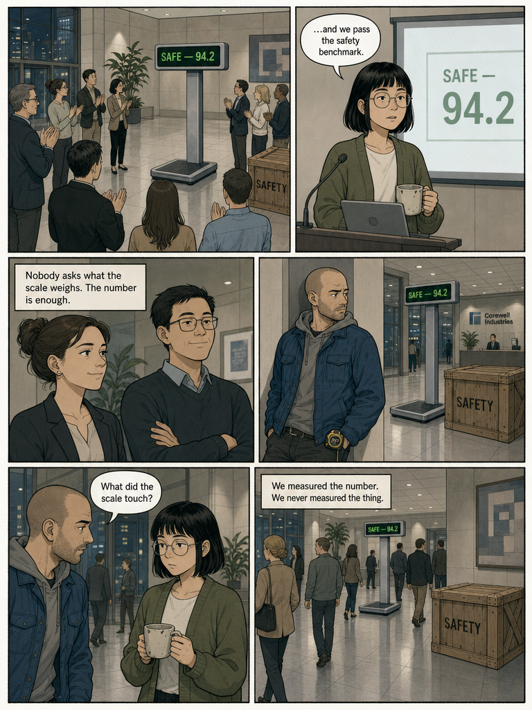
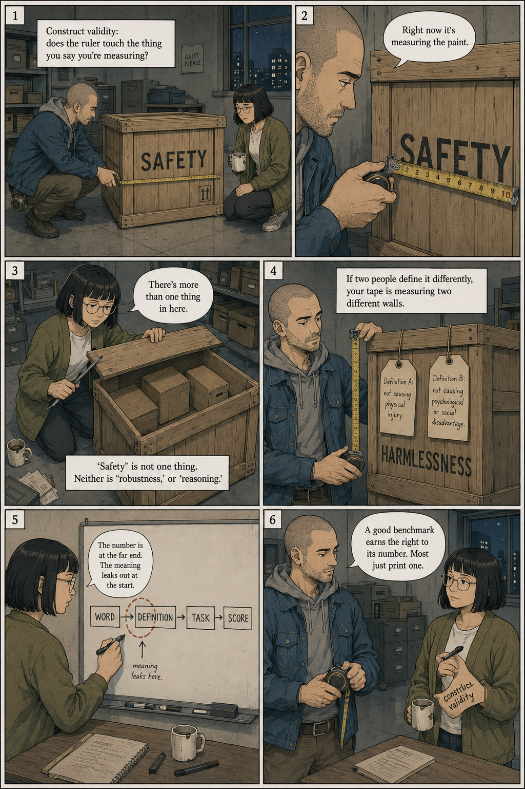
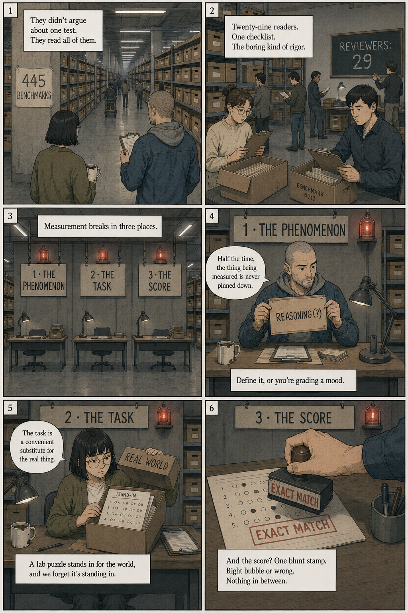
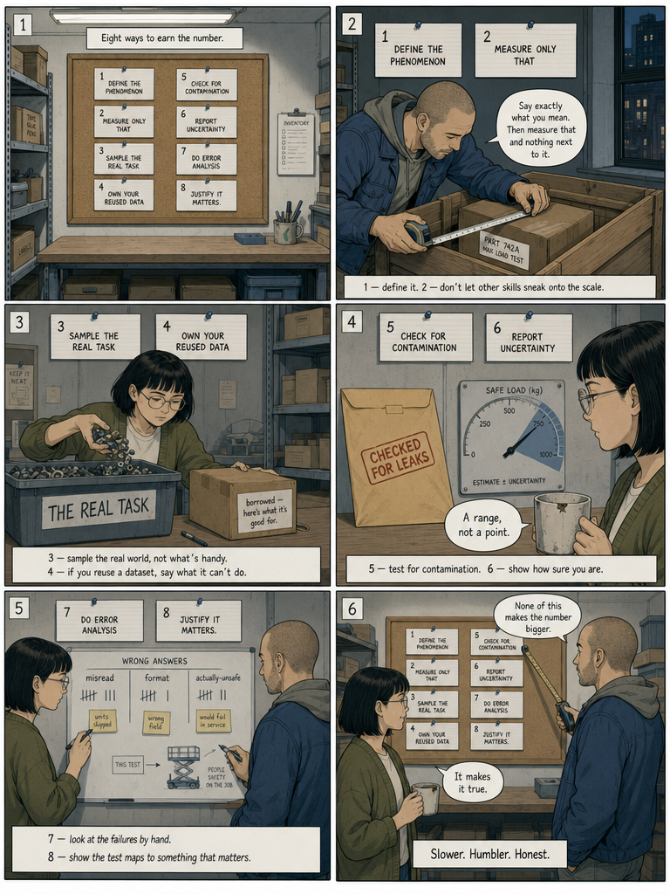
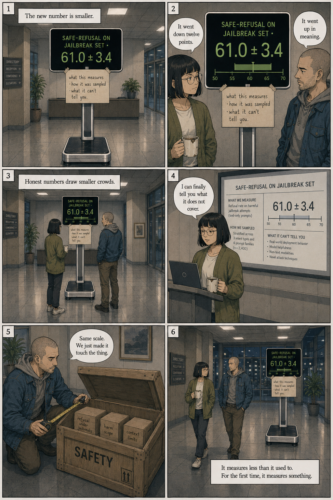

Measuring What Matters
A confident benchmark score can measure almost nothing. Twenty-nine reviewers read four hundred and forty-five of them to prove it.
Made by romy to study whitepapers at Frontier Tower. AI Paper Reading Club · June 23, 2026.
Page One
The number that everyone trusts

Page Two
Does the ruler touch the thing?

Page Three
Four hundred and forty-five boxes

Page Four
The numbers nobody reads

Page Five
Eight ways to earn the number

Page Six
An honest, smaller number

What's actually in the box
Every abstract idea in the paper, recast as one ordinary physical prop.
| The scalea benchmark | A glossy lobby weighing scale that prints one confident number. Easy to trust, easy to misread. |
| The sealed cratethe phenomenon | "Safety," "robustness," "reasoning" — a vague word stenciled on a box nobody opened. Often several things at once. |
| The steel tapeconstruct validity | The measure laid against reality. The whole question is whether its hook actually touches the thing, or just the paint. |
| The bubble graderexact-match scoring | Checks only whether the answer is identical to a key. 81% of benchmarks. A correct, differently-worded answer is marked wrong. |
| The gauge needleuncertainty | A single needle with no error band. Only ~16% of benchmarks report how sure they are. |
| The answer keydata contamination | Left face-up in the exam room. The model may have seen the test; an open-book score reported as closed. |
| Eight index cardsthe recommendations | Plain, un-flashy fixes pinned to a corkboard. The paper's actionable guidance for measuring what matters. |
Where measurement leaks
A score sits at the far end of a chain. Meaning escapes at every joint before it.
THE PHENOMENON THE TASK THE SCORE THE CLAIM
"is it safe?" → a test of it → a number → "94.2 — safe"
| | | |
| | | |
[ leak 1 ] [ leak 2 ] [ leak 3 ] looks airtight
never defined, a lab stand-in exact-match only, from here, but
or many things for the real no error bars three leaks
in one word world upstream
| | |
~48% contested 40.7% constructed 81.3% exact-match
definitions (not real-world) 16% report uncertainty
The fix is not a bigger number. It is plugging each leak — so the number
at the end is actually about the question at the start.
Why it's decent work
What makes this paper land, in four lines.
- It countedNot an opinion piece — 29 expert reviewers systematically read 445 benchmarks from leading venues.
- It names the jointsIt locates failure precisely: the phenomenon, the task, the score — not a vague "benchmarks are bad."
- It is constructiveEight concrete, do-this recommendations, not just a diagnosis. Each leak gets a plug.
- It is honest about costThe fixes make scores smaller and humbler. The paper asks for true measurement over impressive numbers.